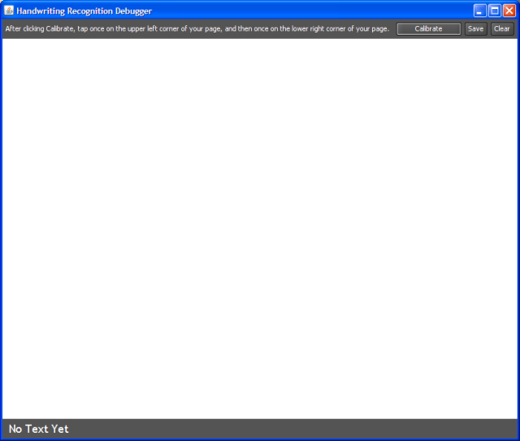
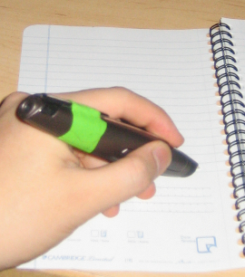
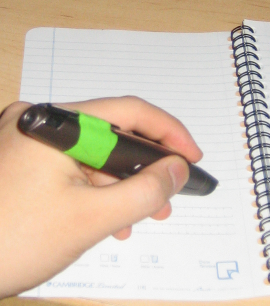
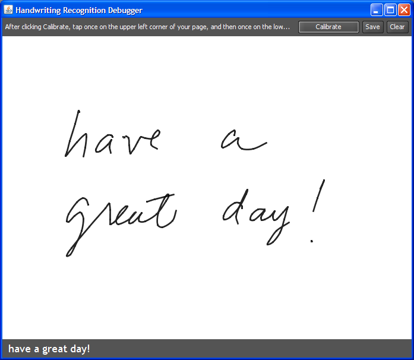

Handwriting Recognition
To use handwriting recognition, you will need to install both the Tablet PC SDK, and the Tablet PC Recognizer Pack. Support for Handwriting Recognition first appeared in R3 version 0.3 (27 Oct 2006).
- We will walk through a demonstration application that also doubles as a way to make sure handwriting recognition is working. After setting up the two Tablet PC packages, make sure your bluetooth dongle is plugged in, and your pen is in streaming mode (the light is blinking). Also, make sure you have some patterned paper. Anything will do. In this example, we will use a page from our Mead 5x8 Digital Notebook.
- Open up Eclipse to make sure everything is compiled.... Navigate to edu.stanford.hci.r3.pen.handwriting and run HandwritingCaptureDebugger.

You will see this empty screen. To start, click the Calibrate button (or hit the space bar as Calibrate is already in focus).
- Now, pick your favorite Anoto page and tap somewhere to define the top left corner of your region.
 

On the same page, tap somewhere else to define the bottom right corner of your region. (Note: we have just defined a region and added a new event handler to that region... all at paper-application runtime!)
- Then, start writing in your newly defined region.


As you write, the best guess is displayed in the text area at the bottom. The handwriting recognition filter also allows you to get a top ten list of Tablet PC's best guesses. Here, we just display the top guess.
- You can hit the Clear button to wipe the slate clean. Or, you can choose Calibrate to define a new region somewhere else!

Here, I defined a small region, so the text looks a lot bigger.
- Hit save to see an XML representation of your handwriting. We can't do anything cool yet with this XML file, but future versions of the toolkit will enable us to save and load handwriting files.
The Code
- More to come...
Ron B. Yeh
Stanford University